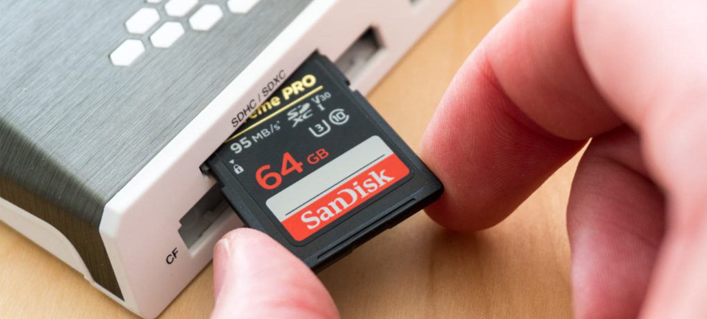

วิธีการทำความสะอาดกล้องด้วยตัวเอง
10 Oct 2019
Author : Arm Suphakit
วิธีการทำความสะอาดกล้องด้วยตัวเอง
วิธีการทำความสะอาดกล้อง ด้วยตัวเองอันนี้จะเป็นวิธีง่าย ๆ ที่จะทำให้มือใหม่และคนที่ใช้งานกล้องทั่วไปสามารถที่จะทำความสะอาดกล้องตัวโปรดด้วยตัวเอง และอุปกรณ์ต่าง ๆ ก็ไม่ได้มีความพิเศษอะไรมาก สามารถหาซื้อได้ตามร้านกล้องตัวไป วิธีการทำความสะอาดกล้อง นี้จะทำให้กล้องของเราน่าใช้งานแล้วก็ในส่วนของการทำความสะอาดเซ็นเซอร์ จะทำให้ภาพของเราไม่มีฝุ่นเข้าไปอยู่ในภาพ ซึ่งในเฉพาะส่วนของการทำความสะอาดเซ็นเซอร์กล้องนั้นแนะนำว่าทำตามคลิปวีดีโอตาม Youtube เพื่อลดความผิดพลาด และมือใหม่จะได้เกิดความมั่นใจในการทำความสะอาดด้วยตัวเอง

การทำความสะอาดในส่วนของบอดี้กล้องตัวเอง (ระดับง่าย)
-
สายคล้องคอ เมื่อใช้เสร็จในเเต่ละครั้ง อาจจะเช็ดคราบเหงื่อออกด้วยทิชชูเปียก หรือผ้าชุบน้ำ บิดหมาด เพื่อเหงื่อจะได้ไม่ทำลายพื้นผิวของหนังที่อยู่บนสายสะพายกล้อง ผึ่งให้เเห้ง ก่อนที่จะเก็บตัวกล้องเข้าในกระเป๋า
-
บอดี้กล้อง เช็ดฝุ่น คราบ รอยเปื้อนด้านนอก ด้วยน้ำยาทำความสะอาด หรือง่าย ๆ ก็ทิชชูเปียกที่มีอยู่ทั่วไปก็ได้ เลี่ยงการใช้แอลกอฮอล์โดยตรงในการทำความสะอาดนะครับถ้าไม่จำเป็น แม้ว่าบอดี้กล้องจะทนต่อแอลกอฮอล์
-
LCD ของกล้อง เช็ด LCD Screen ด้วยน้ำยาทำวามสะอาด หรือ กระดาษทิชชูเปียกก็ได้
-
ช่อง พอร์ตต่าง ๆ และช่องสำหรับใส่แบตเตอรี่ ปัดฝุ่น โดยการใช้เเปรงปัด จะดีหน่อยถ้ามีปัดฝุ่นที่ซอกเล็ก ๆ เช่นปุ่มปรับตั้งค่า ช่องมอง EVF ใช้แปรงปัดฝุ่นก็เพียงพอ เว้นแต่ตรงช่องมองอาจจะเปื้อนรอยนิ้วมือ คราบมันเยอะ ๆ ก็ใช้น้ำยาทำความสะอาดนิดเดียวพอ แล้วเช็ดออก (เหมือนเช็ดแว่นตา)
การทำความสะอาดในส่วนของเลนส์
-
ทำความสะอาดผิวด้านนอกของเลนส์(ตัวบอดี้ของเลนส์) ด้วยผ้าสะอาด ใช้น้ำยาทำความสะอาดร่วมด้วยเล็กน้อยถ้ามีคราบไขมันเพราะมือไปจับเยอะ
-
ใช้ตัวเป่าลม (Rocket Blower บีบ ปล่อย) เพื่อเป่าลมไล่ฝุ่นที่ติดอยู่กับเลนส์ ผิวเลนส์ หรือในร่องเล็ก ๆ
-
กรณีที่ Blower เป่าไม่ออก ใช้เเปรงปัดเบา ๆ เพื่อกำจัดเอาฝุ่น หรือทรายที่เกาะอยู่ออก เบามือนะครับ เพราะต้องระมัดระวังเรื่องของถ้าเศษฝุ่นมีขนาดใหญ่ แล้วเราออกแรงมาก อาจจะทำให้เม็ดทราย ฝุ่น ที่เกาะอยู่ ไปทำให้ผิวหน้าเลนส์เสียหายได้ (แต่ไม่น่ากลัวนะ เพราะเราไม่ได้ออกแรงเยอะ เป่าหรือปัดเบา ๆ พอ)
-
ใช้กระดาษทำความสะอาดหน้าเลนส์ (ผ้าเช็ดเลนส์ที่สะอาดก็ได้) + น้ำยาทำความสะอาดเลนส์ ค่อย ๆ เช็ดหมุมวนเป็นก้นหอย เริ่มวนจากกลาง เลนส์ เเล้วค่อย ๆ วนออกด้านนอก จากนั้นใช้กระดาษเช็ดเลนส์เช็ดเลนส์ให้เเห้ง
-
ส่วนของ Contact ตัวทองเเดงที่เชื่อมระหว่างเลนส์กับกล้อง ใช้แปรงปัด หรือผ้าเช็ดก็พอ ถ้าไม่ได้เกิดรอยเปื้อน หรือคราบไขมันอะไรก็จะไม่ได้ใช้น้ำยาอะไรเช็ดเลย เช็ดด้วยผ้าทำความสะอาดทั่วไปก็พอ
-
ทำความสะอาดฝาปิดเลนส์ ด้วยผ้าชุบน้ำหมาด ๆ หรือทิชชูเปียก เพื่อกำจัดคราบสกปรก หรือฝุ่นที่จับกับฝาครอบออก (ส่วนใหญ่ ฝาครอบนี่แหละตัวสะสมฝุ่นเลย แล้วเราไม่ค่อยได้ใส่ใจฝาเท่าไหร่ ซึ่งฝุ่นจะเยอะมาก)
การทำความสะอาด Sensor
-
แนะนำให้ดูตามคลิปที่ทำสอนไว้ตาม Youtube (ความยากระดับกลาง แต่ถ้ามือใหม่จริง ๆ จะดูน่ากลัว และอยู่ในระดับยาก ถ้าไม่มั่นใจให้ร้านกล้องทำให้ หรือว่าคนรู้จักที่มีความชำนาญจะดีกว่า)
-
ปรับกล้องให้อยู่ที่ cleaning mode ซึ่งกล้องจะยกกระจกหน้าสำหรับกล้อง DSLR Sensor และจะเปิดออก เเละจะเปิดค้างไว้ , ส่วนกล้อง Mirrorless โหมดทำความสะอาดจะปิดระบบกันสั่น (คือล็อคกันสั่นไว้)
-
ใช้ตัวเป่าลม เป่าไล่ฝุ่นที่จับอยู่บน sensor พยายามอย่าใช้อะไรเข้าไปแตะ หรือเช็ด เป่าลมก็พอ การจะทำอะไรเกี่ยวกับผิวสัมผัสเซ็นเซอร์โดยตรง ให้ใช้ไม้ทำความสะอาดและน้ำยาสำหรับทำความสะอาดเซ็นเซอร์เท่านั้น
-
กรณีที่มีฝุ่นที่เป่าไม่ออก หรือพลาดนิ้วไปโดนเซ็นเซอร์ตอนที่เปลี่ยนเลนส์ (สำหรับกล้อง Mirrorless จะเป็นบ่อย) ให้ทำความสะอาดโดยใช้ไม้ปาดเซ็นเซอร์ และน้ำยาทำความสะอาดเซ็นเซอร์เท่านั้น
การทำความสะอาด Filters
-
ใช้ตัวเป่าลม เป่าไล่ฝุ่น
-
เช็ดฝุ่น คราบ รอยเปื้อนด้านนอก ด้วยน้ำยาทำความสะอาด ค่อยถู ๆ หมุนวนเป็นวงกลมจากด้านในสุด ออกไปข้างนอกสุด